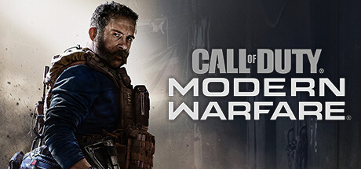

Галерея



Call of Duty: Modern Warfare - це серія шутерів від першої особи, створена Infinity Ward та видана Activision. Серія включає три основні гри: Modern Warfare, Modern Warfare 2 і Modern Warfare 3. Гра є в реалістичному і сучасному сетингу. Вперше в історії франшизи, Call of Duty: Modern Warfare підтримує кросплатформовий мультиплеєр. Activision також підтвердила, що традиційного сезонного пропуска не буде, що дозволить компанії поширювати безкоштовний контент після запуску гри.
Call of Duty 4: Modern Warfare (укр. «Поклик обов'язку 4: Сучасна війна», «Службовий обов'язок 4: Сучасна війна») — шутер від першої особи розроблений американською компанією Infinity Ward і виданий Activision для Mac OS X, PlayStation 3, Microsoft Windows, Xbox 360 та Wii. Гра вийшла в Північній Америці, Австралії та Європі в листопаді 2007 для Xbox 360, PlayStation 3 та Windows, у вересні 2008 для Mac а у 2009 була випущена для Wii під назвою Call of Duty: Modern Warfare – Reflex Edition. Ця гра стала четвертою в серії Call of Duty і першою в підсерії Modern Warfare, прямим продовженням сюжету гри є Call of Duty: Modern Warfare 2. Це перша гра серії, що відривається від тематики Другої світової, події гри відбуваються в наш час і пов'язані з боротьбою проти тероризму. Гра використовує власний рушій, що розроблявся протягом двох років. 10 листопада 2009 року гра була видана в Японії Square Enix.
Call of Duty: Modern Warfare 2 (укр. «Поклик обов'язку: Сучасна війна 2», «Службовий обов'язок: Сучасна війна 2») — мультиплатформна відеогра в жанрі шутера від першої особи, розроблена американською компанією Infinity Ward і видана Activision. Гра є шостою в серії Call of Duty. Проект був офіційно анонсований 11 лютого 2009 року. Вихід Call of Duty: Modern Warfare 2 відбувся 10 листопада 2009 року на PlayStation 3, Xbox 360 і PC. У 2020 році була перевипущена нова версія ігри з новим рушієм Call of Duty: Modern Warfare 2 Remastered.
Call of Duty Modern Warfare 3 (укр. «Поклик Обов'язку: Сучасна війна 3», «Службовий обов'язок: Сучасна війна 3») — мультиплатформерна відеогра в жанрі тривимірного шутера від першої особи, сиквел попередньої гри із підсерії Modern Warfare — Call of Duty: Modern Warfare 2. Остання, заключна частина підсерії Modern Warfare і восьма гра в серії серії Call of Duty. Розроблена компанією Infinity Ward при допомозі студії Raven Software, видавцем гри виступила Activision. Розробкою версії гри для Nintendo DS займалась студія n-Space[2], версії для Wii — Treyarch[3]. Гра поступила в продаж 8 листопада 2011 року а на всіх платформах[4]. Третій рік підряд гра серії Call of Duty встановлює світовий рекорд продажів у сфері розваг: за 24 години було продано більше 9.3 млн копій гри.